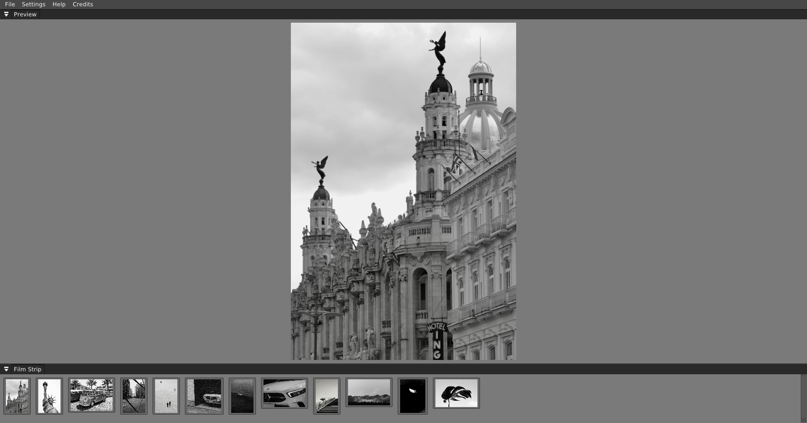
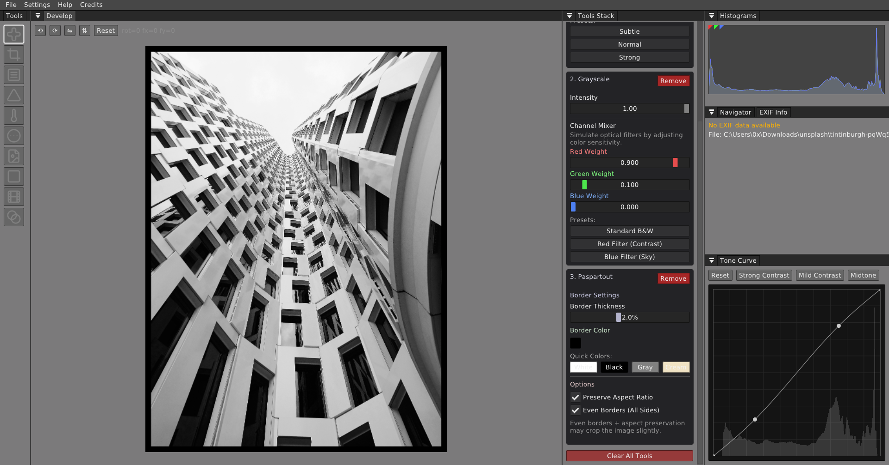
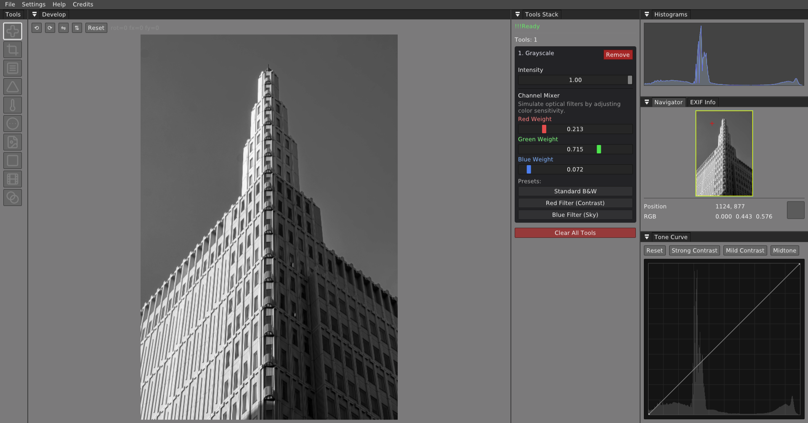
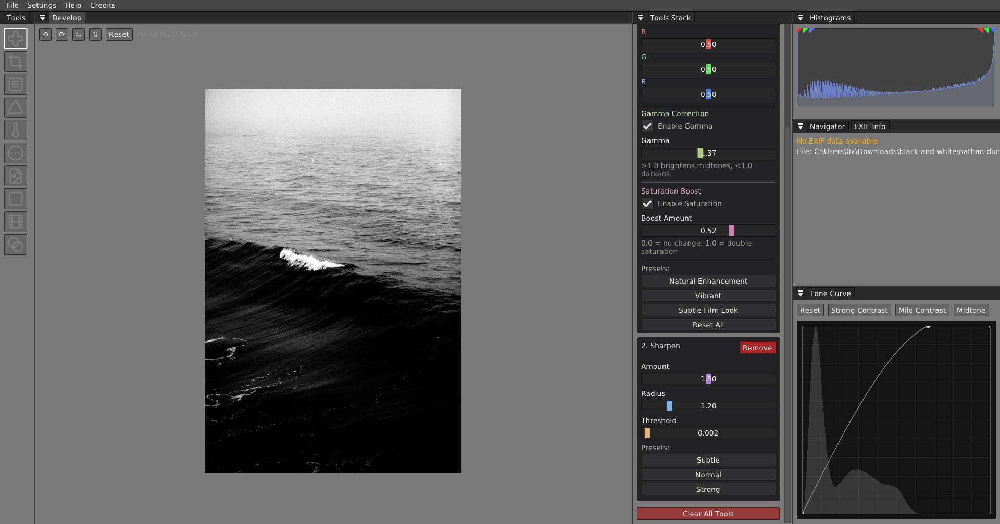
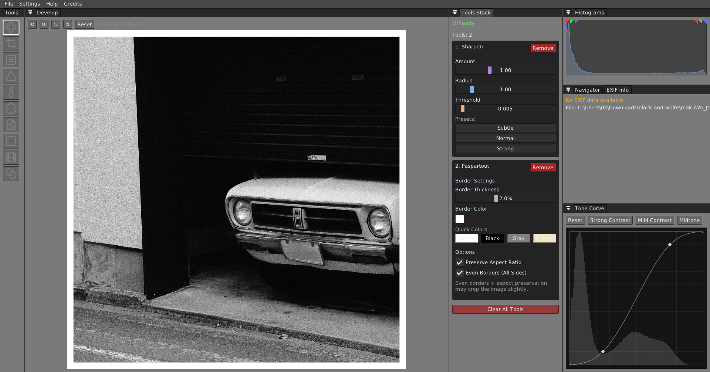
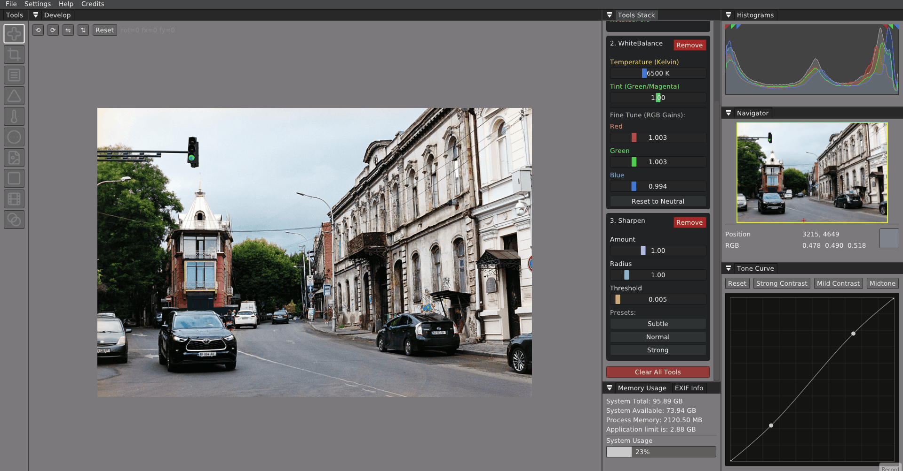

Develop
Tool stack

Stack sharpening, curves, and output tools in a non-destructive develop workflow.
Universal package for GNU/Linux systems.
Professional image processing for photographers who care about every detail.
Develop RAW images, refine colors, and build your own creative workflow with precision tools designed for modern photography.
Workflow
A pipeline-based editing environment built for serious photographers — from RAW development through batch processing and export.

Stack sharpening, curves, and output tools in a non-destructive develop workflow.

Refine contrast with a precision tone curve, histogram feedback, and passepartout framing controls.

Convert to black and white with a channel mixer, tonal presets, and non-destructive intensity control.
Capabilities
01
"Extract the full potential of your images."
Develop sensor data with precision. Wena preserves every bit of information from your camera's RAW files through a non-destructive pipeline.
02
"Build your own creative process."
A node-based editing workflow that adapts to how you work. Chain processing steps, save presets, apply consistent looks across entire shoots, and run built-in batch processing on large sets.

03
"Designed for photographers who understand color."
Accurate color handling built on professional color science. Curves, tone mapping, histograms, and film-inspired workflows for photographers who take color seriously.

04
"Fast enough for modern photography."
Engineered in C++ with GPU acceleration. Handle large files, built-in batch processing, and demanding workflows without compromising responsiveness.

Workflow
Screen recordings of real editing workflows.



Engineering
Serious software for serious work. No compromises in the foundation.
Native performance with carefully optimized image processing algorithms. Every calculation in 32-bit floating point.
Hardware-accelerated rendering and processing. Display-synced preview for fluid, responsive editing.
Full sensor data development with embedded preview extraction. Browse thousands of files without waiting.
Built-in batch processing, non-destructive pipeline editing, and one-click settings transfer across entire image series.
Available on macOS, Windows, and Linux. One workflow, wherever you work.
RAW, TIFF, JPEG, HEIC, and HEIF from all modern cameras. Universal import with full precision.
Community
Learn workflows, share work, and shape the future of the tool.
Workflow
Develop a look once on your lead image, then transfer the entire processing pipeline to an entire shoot in one click.
View workflowTutorial
From sensor data to export-ready files. A complete guide to non-destructive development and color-managed output.
Showcase
Tools for colorizing vintage film and negative scans. See the workflow recording in the gallery.
See galleryFree · Open Beta · Windows · GNU/Linux · macOS
Support
bc1qafwz7u87u5am2grvmej3u5qe03j8yev3zukmr8
Copy
TRhJMa8sxSxf7mwFpEoQBQ9YSPvrrNwpoJ
Copy
0x1130a6ED596d24060F1CB60e96B3E7Ecf2AB1F19
Copy
0x1130a6ED596d24060F1CB60e96B3E7Ecf2AB1F19
Copy
addr1qyyjtwf2efdxmlf2850fzpa89tq28tkjm4cae2g3yt8q2lct7mapd38ve9m2d9vcsnlhgevlv6ez4y5xzv9sufkzkycs4k8z79
Copy